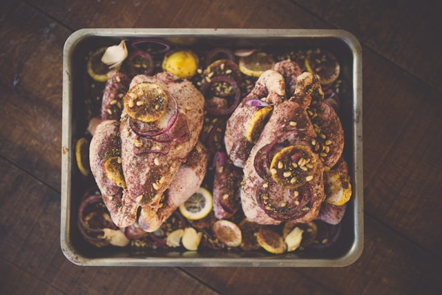
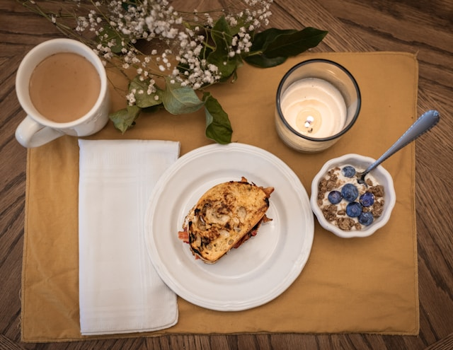
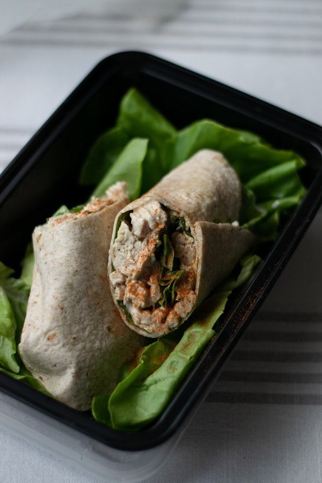

Dinner
Garlic Chicken Bowl
A quick and healthy chicken bowl with garlic, roasted vegetables, and rice.
Three quick recipe ideas

Dinner
A quick and healthy chicken bowl with garlic, roasted vegetables, and rice.

Breakfast
Crisp toast layered with yogurt, fresh berries, and a drizzle of honey.

Lunch
A fresh wrap with turkey, avocado, greens, and a light creamy spread.